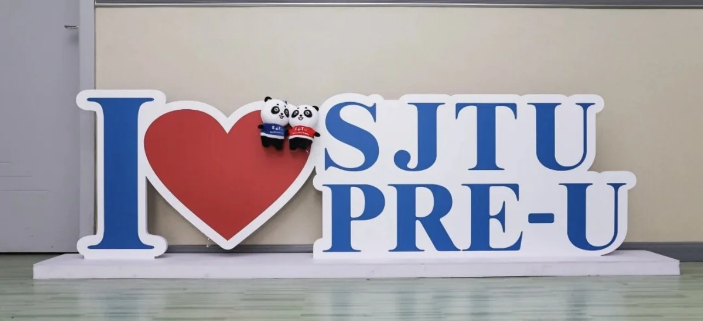

Scheduling
Friday at 4 p.m. was intended for two-hour deep-learning sessions, but it conflicted with classes, sport, rest and personal plans.
PRE-UNIVERSITY LIFE
The report explains why attendance was difficult and how future club planning should respect student workload.

Friday at 4 p.m. was intended for two-hour deep-learning sessions, but it conflicted with classes, sport, rest and personal plans.
The availability survey was too complicated and required repeated reminders, using time without producing a clear decision.
Students were balancing Chinese, STEM preparation, assignments, deadlines, hobbies and personal commitments.
WHAT FUTURE STUDENTS SHOULD KNOW
A useful student-life website should cover Chinese learning, Mathematics and science preparation, class schedules, assignments, friendships, cultural adjustment, sleep, hobbies and extracurricular commitments.
This final version begins that documentation through event archives, the annual report and a separate preparation guide.
2026 IMPROVEMENT PLAN
The report proposes practical changes instead of simply asking students to attend more often.
Teach through personal websites and concrete outputs rather than explanations alone.
Use direct responses and concise choices instead of long, repeated surveys.
Allow structured lessons, independent work, questions, topic requests and asynchronous participation.